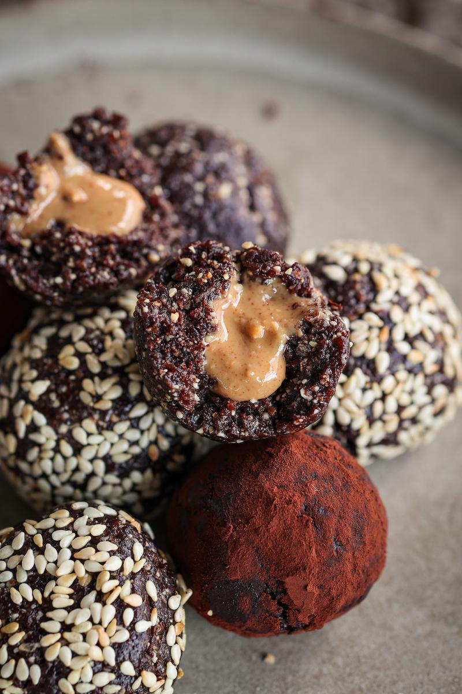

Energy Ball Recipe

Recipe Courtesy of Pick Up Limes
I highly recommend this recipe which I have made many times. It's borrowed from Pick Up Limes.
Energy balls are a great, easy-to-transport snack. These are deliciously sweet, with a creamy, oozy, nutty filling. Take a few with you to keep you charged all day or enjoy as a simple evening snack with a cup of tea.
Ingredients
- 1 cup (160 g) soft dates, pits removed
- ½ cup (68 g) roasted unsalted cashews
- 2 Tbsp (13 g) Dutch processed cocoa powder
- 1 Tbsp (9 g) toasted sesame seeds
- 1 Tbsp (7 g) ground flaxseeds
- 1½ Tbsp (22 mL) peanut butter
Steps
- Add the dates, cashews, cocoa powder, sesame seeds, and flaxseeds to a food processor.
- Blend until uniform in texture and holds together when pressed between your fingers.
- Scoop 2 Tbsp of the mixture into your palm and form into a ball.
- Use your finger to create a crater in the center of the date ball.
- Dollop about ½ tsp of peanut butter into the crater.
- Cupping the filled ball, pinch the edges closed around the peanut butter.
- Roll the filled energy ball back into a sphere.
- Transfer it to a plate. Repeat with the remaining date mixture and peanut butter. If desired, coat with toasted sesame seeds or cocoa powder. Enjoy!